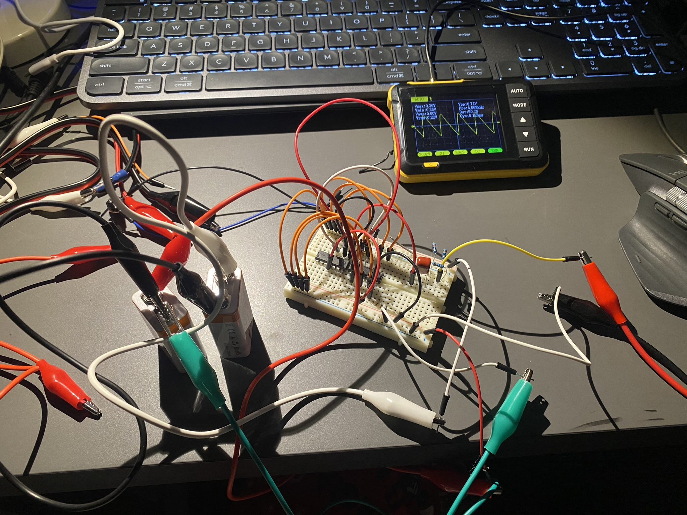

Guitar-Driven Synth
Continuing on my interest in music and electronics, I am currently working on a guitar-driven synthesizer. The project consists on three main parts: an analog voltage control oscillator (VCO), a live guitar note detection system, and the embedded software that would autonomously what notes the VCO plays based on the guitar input
The plan is to have a CD40106-based VCO (based on Moritz Klein's design) that is controlled by an ESP32 via a Digital to Analog Converter (DAC). The guitar would be connected to the ESP32 via a 6.35mm jack, and the ESP32 would run a Fast Fourier Transform (FFT) to detect the fundamental frequency of the guitar input and its modes. The microcontroller would then process this information and live select an accompanying harmony to the original melody which would be played by the VCO.
Special attention is placed on the synthesizer's visual aesthetic and user interface.